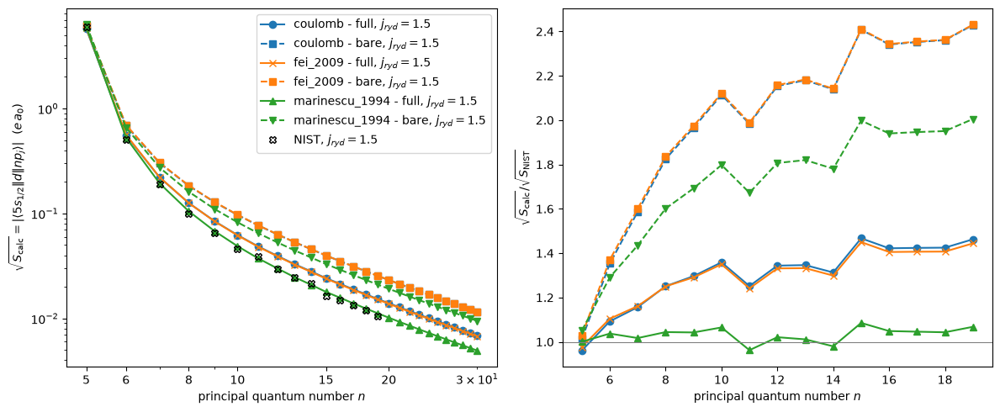
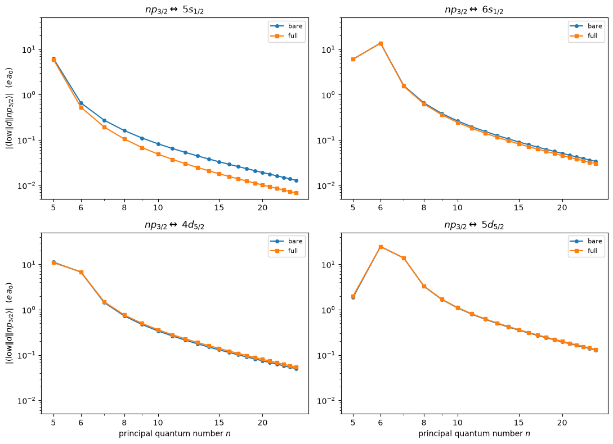
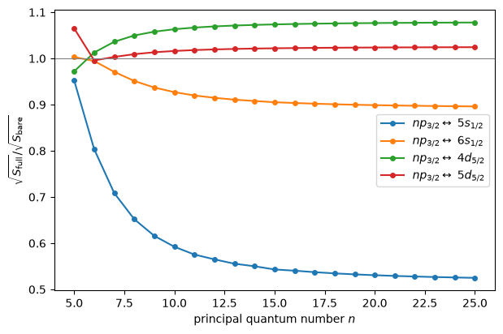
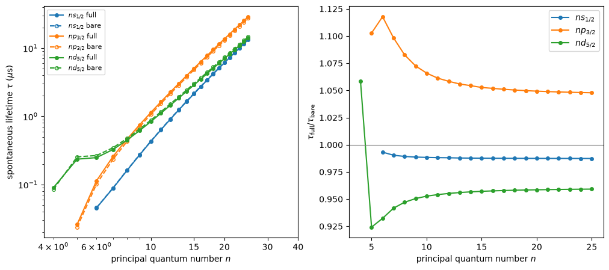

Compare Rb \(5s \rightarrow np_j\) matrix elements with NIST
This notebook compares the reduced electric-dipole matrix elements \(\langle 5s_{1/2} \Vert d \Vert np_j \rangle\) of rubidium (\(n = 5, \dots, 20\) and \(j = 1/2, 3/2\)) computed by rydstate with the experimental values of the NIST Atomic Spectra Database (ASD), for
the bare rydberg dipole operator \(d(r) = r\), and
the full (core-polarization dressed) dipole operator \(d(r) = r - \frac{\alpha_c}{r^2}\left(1 - e^{-(r/r_c)^3}\right)\).
The later sections then look at how the full operator affects the remaining decay channels of the \(np\) states and, finally, the \(ns_{1/2}\), \(np_{3/2}\) and \(nd_{5/2}\) lifetimes. For those no NIST line strengths are used, so there only the bare and full values are compared to each other.
The valence electron polarizes the ionic core; the induced core dipole partially shields the dipole operator. This correction goes back to Hameed et al J. Phys. B: Atom. Mol. Phys. 1 822, 1962 and Weisheit Phys. Rev. A 5, 1621, 1972, and is also described in Marinescu et al Phys. Rev. A 49, 982, 1994, where the model potential comes from. The cutoff \(r_c\) is fitted to the NIST line strengths.
[1]:
# %matplotlib widget
import matplotlib.pyplot as plt
import numpy as np
import rydstate
NIST reference values
The NIST ASD line strength of an E1 transition is \(S = |\langle J \Vert d \Vert J' \rangle|^2\) in atomic units \((e\,a_0)^2\), so it is directly comparable to the square of rydstate’s reduced matrix elements.
[2]:
# {(n, j): S in (e a0)^2} from https://physics.nist.gov/PhysRefData/ASD/lines_form.html (retrieved 2026-07-24)
nist_s = {
(5, 0.5): 1.79e1,
(6, 0.5): 1.11e-1,
(7, 0.5): 1.32e-2,
(8, 0.5): 3.31e-3,
(9, 0.5): 1.28e-3,
(10, 0.5): 6.24e-4,
(11, 0.5): 3.79e-4,
(12, 0.5): 2.02e-4,
(13, 0.5): 1.28e-4,
(14, 0.5): 1.04e-4,
(15, 0.5): 6.85e-5,
(16, 0.5): 4.82e-5,
(17, 0.5): 3.75e-5,
(18, 0.5): 2.83e-5,
(19, 0.5): 2.34e-5,
(20, 0.5): 1.50e-5,
(5, 1.5): 3.58e1,
(6, 1.5): 2.59e-1,
(7, 1.5): 3.62e-2,
(8, 1.5): 1.01e-2,
(9, 1.5): 4.25e-3,
(10, 1.5): 2.10e-3,
(11, 1.5): 1.50e-3,
(12, 1.5): 8.62e-4,
(13, 1.5): 5.95e-4,
(14, 1.5): 4.57e-4,
(15, 1.5): 2.72e-4,
(16, 1.5): 2.25e-4,
(17, 1.5): 1.77e-4,
(18, 1.5): 1.42e-4,
(19, 1.5): 1.10e-4,
}
Bare vs. full operator
The full operator (including the core-polarization correction) is used automatically if “electric_dipole” is specified. To compute the bare values for comparison, one can restrict the matrix element to the contribution of the Rydberg electron via part="rydberg", which leaves out the “closed_shell_core” contribution.
[3]:
n_max = 30
matrix_elements: dict[str, dict[tuple[int, float], float]] = {}
for potential in ["coulomb", "fei_2009", "marinescu_1994"]:
basis_ns = rydstate.BasisSQDT("Rb", n=(0, n_max), l_r=(0, 0), potential_class=potential)
ground_state = basis_ns.sort_states("nu").states[0]
basis_np = rydstate.BasisSQDT("Rb", n=(0, n_max), l_r=(1, 1), potential_class=potential)
matrix_elements[potential + " - full"] = {
(state.n, state.calc_exp_qn("j_r")): state.calc_reduced_matrix_element(
ground_state, "electric_dipole", unit="e a0"
)
for state in basis_np.states
}
matrix_elements[potential + " - bare"] = {
(state.n, state.calc_exp_qn("j_r")): state.calc_reduced_matrix_element(
ground_state, "electric_dipole", part="rydberg", unit="e a0"
)
for state in basis_np.states
}
The wavefunction for the radial_ket RadialKet(nu=2.2798755593634197, potential=PotentialCoulombRubidium(l_r=1)) has some issues:
The wavefunction is not close to zero at the inner boundary (inner_weight_scaled_to_whole_grid=1.86e-01)
The wavefunction has 1 nodes, but should have 3 nodes.
The wavefunction for the radial_ket RadialKet(nu=1.8047588909608785, potential=PotentialCoulombRubidium(l_r=0)) has some issues:
The wavefunction is not close to zero at the inner boundary (inner_weight_scaled_to_whole_grid=6.38e-02)
The wavefunction has 1 nodes, but should have 4 nodes.
The integration for l=0 did stop at 0.18 (should be close to zero).
The wavefunction for the radial_ket RadialKet(nu=2.2928137655389933, potential=PotentialCoulombRubidium(l_r=1)) has some issues:
The wavefunction is not close to zero at the inner boundary (inner_weight_scaled_to_whole_grid=2.30e-01)
The wavefunction has 1 nodes, but should have 3 nodes.
The wavefunction for the radial_ket RadialKet(nu=3.3166565883621346, potential=PotentialCoulombRubidium(l_r=1)) has some issues:
The wavefunction is not close to zero at the inner boundary (inner_weight_scaled_to_whole_grid=1.19e-01)
The wavefunction has 2 nodes, but should have 4 nodes.
The wavefunction for the radial_ket RadialKet(nu=3.3296169041882475, potential=PotentialCoulombRubidium(l_r=1)) has some issues:
The wavefunction is not close to zero at the inner boundary (inner_weight_scaled_to_whole_grid=1.38e-01)
The wavefunction has 2 nodes, but should have 4 nodes.
The wavefunction for the radial_ket RadialKet(nu=4.328904109253159, potential=PotentialCoulombRubidium(l_r=1)) has some issues:
The wavefunction is not close to zero at the inner boundary (inner_weight_scaled_to_whole_grid=6.94e-02)
The wavefunction has 3 nodes, but should have 5 nodes.
The wavefunction for the radial_ket RadialKet(nu=4.341932414575337, potential=PotentialCoulombRubidium(l_r=1)) has some issues:
The wavefunction is not close to zero at the inner boundary (inner_weight_scaled_to_whole_grid=8.02e-02)
The wavefunction has 3 nodes, but should have 5 nodes.
The wavefunction for the radial_ket RadialKet(nu=5.3346623184853135, potential=PotentialCoulombRubidium(l_r=1)) has some issues:
The wavefunction is not close to zero at the inner boundary (inner_weight_scaled_to_whole_grid=4.32e-02)
The wavefunction has 4 nodes, but should have 6 nodes.
The wavefunction for the radial_ket RadialKet(nu=5.347749980208695, potential=PotentialCoulombRubidium(l_r=1)) has some issues:
The wavefunction is not close to zero at the inner boundary (inner_weight_scaled_to_whole_grid=4.99e-02)
The wavefunction has 4 nodes, but should have 6 nodes.
The wavefunction for the radial_ket RadialKet(nu=6.3377119847246455, potential=PotentialCoulombRubidium(l_r=1)) has some issues:
The wavefunction is not close to zero at the inner boundary (inner_weight_scaled_to_whole_grid=3.07e-02)
The wavefunction has 5 nodes, but should have 7 nodes.
The wavefunction for the radial_ket RadialKet(nu=6.350837333725099, potential=PotentialCoulombRubidium(l_r=1)) has some issues:
The wavefunction is not close to zero at the inner boundary (inner_weight_scaled_to_whole_grid=3.52e-02)
The wavefunction has 5 nodes, but should have 7 nodes.
The wavefunction for the radial_ket RadialKet(nu=7.339558539351324, potential=PotentialCoulombRubidium(l_r=1)) has some issues:
The wavefunction is not close to zero at the inner boundary (inner_weight_scaled_to_whole_grid=2.19e-02)
The wavefunction has 6 nodes, but should have 8 nodes.
The wavefunction for the radial_ket RadialKet(nu=7.352764136936508, potential=PotentialCoulombRubidium(l_r=1)) has some issues:
The wavefunction is not close to zero at the inner boundary (inner_weight_scaled_to_whole_grid=2.52e-02)
The wavefunction has 6 nodes, but should have 8 nodes.
The wavefunction for the radial_ket RadialKet(nu=8.340755076343015, potential=PotentialCoulombRubidium(l_r=1)) has some issues:
The wavefunction is not close to zero at the inner boundary (inner_weight_scaled_to_whole_grid=1.63e-02)
The wavefunction has 7 nodes, but should have 9 nodes.
The wavefunction for the radial_ket RadialKet(nu=8.353923166651649, potential=PotentialCoulombRubidium(l_r=1)) has some issues:
The wavefunction is not close to zero at the inner boundary (inner_weight_scaled_to_whole_grid=1.88e-02)
The wavefunction has 7 nodes, but should have 9 nodes.
The wavefunction for the radial_ket RadialKet(nu=9.341810845049446, potential=PotentialCoulombRubidium(l_r=1)) has some issues:
The wavefunction is not close to zero at the inner boundary (inner_weight_scaled_to_whole_grid=1.27e-02)
The wavefunction has 8 nodes, but should have 10 nodes.
The wavefunction for the radial_ket RadialKet(nu=9.35498881502479, potential=PotentialCoulombRubidium(l_r=1)) has some issues:
The wavefunction is not close to zero at the inner boundary (inner_weight_scaled_to_whole_grid=1.45e-02)
The wavefunction has 8 nodes, but should have 10 nodes.
The wavefunction for the radial_ket RadialKet(nu=10.34236608608348, potential=PotentialCoulombRubidium(l_r=1)) has some issues:
The wavefunction is not close to zero at the inner boundary (inner_weight_scaled_to_whole_grid=1.00e-02)
The wavefunction has 9 nodes, but should have 11 nodes.
The wavefunction for the radial_ket RadialKet(nu=10.355489298307495, potential=PotentialCoulombRubidium(l_r=1)) has some issues:
The wavefunction is not close to zero at the inner boundary (inner_weight_scaled_to_whole_grid=1.15e-02)
The wavefunction has 9 nodes, but should have 11 nodes.
The wavefunction for the radial_ket RadialKet(nu=11.342795685110401, potential=PotentialCoulombRubidium(l_r=1)) has some issues:
The wavefunction is not close to zero at the inner boundary (inner_weight_scaled_to_whole_grid=8.14e-03)
The wavefunction has 10 nodes, but should have 12 nodes.
The wavefunction for the radial_ket RadialKet(nu=11.356113893831111, potential=PotentialCoulombRubidium(l_r=1)) has some issues:
The wavefunction is not close to zero at the inner boundary (inner_weight_scaled_to_whole_grid=9.38e-03)
The wavefunction has 10 nodes, but should have 12 nodes.
The wavefunction for the radial_ket RadialKet(nu=12.343068656664212, potential=PotentialCoulombRubidium(l_r=1)) has some issues:
The wavefunction is not close to zero at the inner boundary (inner_weight_scaled_to_whole_grid=6.73e-03)
The wavefunction has 11 nodes, but should have 13 nodes.
The wavefunction for the radial_ket RadialKet(nu=12.356196621079729, potential=PotentialCoulombRubidium(l_r=1)) has some issues:
The wavefunction is not close to zero at the inner boundary (inner_weight_scaled_to_whole_grid=7.73e-03)
The wavefunction has 11 nodes, but should have 13 nodes.
The wavefunction for the radial_ket RadialKet(nu=13.343486729034456, potential=PotentialCoulombRubidium(l_r=1)) has some issues:
The wavefunction is not close to zero at the inner boundary (inner_weight_scaled_to_whole_grid=5.66e-03)
The wavefunction has 12 nodes, but should have 14 nodes.
The wavefunction for the radial_ket RadialKet(nu=13.35667312845785, potential=PotentialCoulombRubidium(l_r=1)) has some issues:
The wavefunction is not close to zero at the inner boundary (inner_weight_scaled_to_whole_grid=6.50e-03)
The wavefunction has 12 nodes, but should have 14 nodes.
The wavefunction for the radial_ket RadialKet(nu=14.343705843899631, potential=PotentialCoulombRubidium(l_r=1)) has some issues:
The wavefunction is not close to zero at the inner boundary (inner_weight_scaled_to_whole_grid=4.81e-03)
The wavefunction has 13 nodes, but should have 15 nodes.
The wavefunction for the radial_ket RadialKet(nu=14.35689538321315, potential=PotentialCoulombRubidium(l_r=1)) has some issues:
The wavefunction is not close to zero at the inner boundary (inner_weight_scaled_to_whole_grid=5.53e-03)
The wavefunction has 13 nodes, but should have 15 nodes.
The wavefunction for the radial_ket RadialKet(nu=15.343883533981597, potential=PotentialCoulombRubidium(l_r=1)) has some issues:
The wavefunction is not close to zero at the inner boundary (inner_weight_scaled_to_whole_grid=4.14e-03)
The wavefunction has 14 nodes, but should have 16 nodes.
The wavefunction for the radial_ket RadialKet(nu=15.357075654469439, potential=PotentialCoulombRubidium(l_r=1)) has some issues:
The wavefunction is not close to zero at the inner boundary (inner_weight_scaled_to_whole_grid=4.76e-03)
The wavefunction has 14 nodes, but should have 16 nodes.
The wavefunction for the radial_ket RadialKet(nu=16.344029619486154, potential=PotentialCoulombRubidium(l_r=1)) has some issues:
The wavefunction is not close to zero at the inner boundary (inner_weight_scaled_to_whole_grid=3.60e-03)
The wavefunction has 15 nodes, but should have 17 nodes.
The wavefunction for the radial_ket RadialKet(nu=16.357223887110685, potential=PotentialCoulombRubidium(l_r=1)) has some issues:
The wavefunction is not close to zero at the inner boundary (inner_weight_scaled_to_whole_grid=4.14e-03)
The wavefunction has 15 nodes, but should have 17 nodes.
The wavefunction for the radial_ket RadialKet(nu=17.344151174153122, potential=PotentialCoulombRubidium(l_r=1)) has some issues:
The wavefunction is not close to zero at the inner boundary (inner_weight_scaled_to_whole_grid=3.15e-03)
The wavefunction has 16 nodes, but should have 18 nodes.
The wavefunction for the radial_ket RadialKet(nu=17.35734724673488, potential=PotentialCoulombRubidium(l_r=1)) has some issues:
The wavefunction is not close to zero at the inner boundary (inner_weight_scaled_to_whole_grid=3.63e-03)
The wavefunction has 16 nodes, but should have 18 nodes.
The wavefunction for the radial_ket RadialKet(nu=18.344253397970036, potential=PotentialCoulombRubidium(l_r=1)) has some issues:
The wavefunction is not close to zero at the inner boundary (inner_weight_scaled_to_whole_grid=2.78e-03)
The wavefunction has 17 nodes, but should have 19 nodes.
The wavefunction for the radial_ket RadialKet(nu=18.35745100218057, potential=PotentialCoulombRubidium(l_r=1)) has some issues:
The wavefunction is not close to zero at the inner boundary (inner_weight_scaled_to_whole_grid=3.20e-03)
The wavefunction has 17 nodes, but should have 19 nodes.
The wavefunction for the radial_ket RadialKet(nu=19.344340182690704, potential=PotentialCoulombRubidium(l_r=1)) has some issues:
The wavefunction is not close to zero at the inner boundary (inner_weight_scaled_to_whole_grid=2.48e-03)
The wavefunction has 18 nodes, but should have 20 nodes.
The wavefunction for the radial_ket RadialKet(nu=19.35753909760986, potential=PotentialCoulombRubidium(l_r=1)) has some issues:
The wavefunction is not close to zero at the inner boundary (inner_weight_scaled_to_whole_grid=2.85e-03)
The wavefunction has 18 nodes, but should have 20 nodes.
The wavefunction for the radial_ket RadialKet(nu=20.34441448779999, potential=PotentialCoulombRubidium(l_r=1)) has some issues:
The wavefunction is not close to zero at the inner boundary (inner_weight_scaled_to_whole_grid=2.22e-03)
The wavefunction has 19 nodes, but should have 21 nodes.
The wavefunction for the radial_ket RadialKet(nu=20.357614532958248, potential=PotentialCoulombRubidium(l_r=1)) has some issues:
The wavefunction is not close to zero at the inner boundary (inner_weight_scaled_to_whole_grid=2.55e-03)
The wavefunction has 19 nodes, but should have 21 nodes.
The wavefunction for the radial_ket RadialKet(nu=21.344478596207182, potential=PotentialCoulombRubidium(l_r=1)) has some issues:
The wavefunction is not close to zero at the inner boundary (inner_weight_scaled_to_whole_grid=2.00e-03)
The wavefunction has 20 nodes, but should have 22 nodes.
The wavefunction for the radial_ket RadialKet(nu=21.3576796227516, potential=PotentialCoulombRubidium(l_r=1)) has some issues:
The wavefunction is not close to zero at the inner boundary (inner_weight_scaled_to_whole_grid=2.30e-03)
The wavefunction has 20 nodes, but should have 22 nodes.
The wavefunction for the radial_ket RadialKet(nu=22.34453429171098, potential=PotentialCoulombRubidium(l_r=1)) has some issues:
The wavefunction is not close to zero at the inner boundary (inner_weight_scaled_to_whole_grid=1.80e-03)
The wavefunction has 21 nodes, but should have 23 nodes.
The wavefunction for the radial_ket RadialKet(nu=22.35773617578468, potential=PotentialCoulombRubidium(l_r=1)) has some issues:
The wavefunction is not close to zero at the inner boundary (inner_weight_scaled_to_whole_grid=2.08e-03)
The wavefunction has 21 nodes, but should have 23 nodes.
The wavefunction for the radial_ket RadialKet(nu=23.344582984439704, potential=PotentialCoulombRubidium(l_r=1)) has some issues:
The wavefunction is not close to zero at the inner boundary (inner_weight_scaled_to_whole_grid=1.64e-03)
The wavefunction has 22 nodes, but should have 24 nodes.
The wavefunction for the radial_ket RadialKet(nu=23.357785622155063, potential=PotentialCoulombRubidium(l_r=1)) has some issues:
The wavefunction is not close to zero at the inner boundary (inner_weight_scaled_to_whole_grid=1.89e-03)
The wavefunction has 22 nodes, but should have 24 nodes.
The wavefunction for the radial_ket RadialKet(nu=24.344625800993924, potential=PotentialCoulombRubidium(l_r=1)) has some issues:
The wavefunction is not close to zero at the inner boundary (inner_weight_scaled_to_whole_grid=1.50e-03)
The wavefunction has 23 nodes, but should have 25 nodes.
The wavefunction for the radial_ket RadialKet(nu=24.357829104569984, potential=PotentialCoulombRubidium(l_r=1)) has some issues:
The wavefunction is not close to zero at the inner boundary (inner_weight_scaled_to_whole_grid=1.72e-03)
The wavefunction has 23 nodes, but should have 25 nodes.
The wavefunction for the radial_ket RadialKet(nu=25.344663650202826, potential=PotentialCoulombRubidium(l_r=1)) has some issues:
The wavefunction is not close to zero at the inner boundary (inner_weight_scaled_to_whole_grid=1.37e-03)
The wavefunction has 24 nodes, but should have 26 nodes.
The wavefunction for the radial_ket RadialKet(nu=25.35786754496453, potential=PotentialCoulombRubidium(l_r=1)) has some issues:
The wavefunction is not close to zero at the inner boundary (inner_weight_scaled_to_whole_grid=1.58e-03)
The wavefunction has 24 nodes, but should have 26 nodes.
The wavefunction for the radial_ket RadialKet(nu=26.344697271752576, potential=PotentialCoulombRubidium(l_r=1)) has some issues:
The wavefunction is not close to zero at the inner boundary (inner_weight_scaled_to_whole_grid=1.26e-03)
The wavefunction has 25 nodes, but should have 27 nodes.
The wavefunction for the radial_ket RadialKet(nu=26.35790169377588, potential=PotentialCoulombRubidium(l_r=1)) has some issues:
The wavefunction is not close to zero at the inner boundary (inner_weight_scaled_to_whole_grid=1.45e-03)
The wavefunction has 25 nodes, but should have 27 nodes.
The wavefunction for the radial_ket RadialKet(nu=27.344727272602043, potential=PotentialCoulombRubidium(l_r=1)) has some issues:
The wavefunction is not close to zero at the inner boundary (inner_weight_scaled_to_whole_grid=1.16e-03)
The wavefunction has 26 nodes, but should have 28 nodes.
The wavefunction for the radial_ket RadialKet(nu=27.35793216684855, potential=PotentialCoulombRubidium(l_r=1)) has some issues:
The wavefunction is not close to zero at the inner boundary (inner_weight_scaled_to_whole_grid=1.34e-03)
The wavefunction has 26 nodes, but should have 28 nodes.
Comparison plot
Left: the matrix elements themselves. Right: the ratio of the calculated matrix elements to the NIST values. The color encodes the total angular momentum (\(j = 1/2\) blue, \(j = 3/2\) orange), and the black-edged crosses the NIST values. The bare operator overestimates the matrix elements; the full operator agrees with the NIST values.
[4]:
fig, (ax_me, ax_ratio) = plt.subplots(1, 2, figsize=(12, 5))
colors = ["C0", "C0", "C1", "C1", "C2", "C2", "C3", "C3"]
linestyles = ["-", "--", "-", "--", "-", "--", "-", "--"]
markers = ["o", "s", "x", "s", "^", "v", "o", "s", "^", "v"]
j_r = 3 / 2
j_r_label = rf"$j_{{ryd}}={j_r}$"
n_nist = sorted(n for (n, _j_r) in nist_s if _j_r == j_r)
for label, me in matrix_elements.items():
n_list = [n for (n, _j_r) in me if _j_r == j_r]
style = {"color": colors.pop(0), "linestyle": linestyles.pop(0), "marker": markers.pop(0), "markersize": 6}
ax_me.plot(n_list, [abs(me[(n, j_r)]) for n in n_list], **style, label=f"{label}, {j_r_label}")
ax_ratio.plot(n_nist, np.abs([me[(n, j_r)] / np.sqrt(nist_s[(n, j_r)]) for n in n_nist]), **style)
ax_me.plot(
n_nist,
[np.sqrt(nist_s[(n, j_r)]) for n in n_nist],
color="k",
linestyle="none",
marker="X",
markeredgecolor="black",
fillstyle="none",
label=f"NIST, {j_r_label}",
)
ax_me.set_xscale("log")
ax_me.set_yscale("log")
ax_me.set_xticks([5, 6, 8, 10, 15, 20], labels=["5", "6", "8", "10", "15", "20"])
ax_me.set_xlabel("principal quantum number $n$")
ax_me.set_ylabel(r"$\sqrt{S_\mathrm{calc}} = |\langle 5s_{1/2} \Vert d \Vert np_j \rangle|$ ($e\,a_0$)")
ax_me.legend()
ax_ratio.axhline(1, color="gray", lw=0.8)
ax_ratio.set_xlabel("principal quantum number $n$")
ax_ratio.set_ylabel(r"$\sqrt{S_\mathrm{calc}} / \sqrt{S_\mathrm{NIST}}$")
fig.tight_layout()
plt.show()

Why lifetimes barely change: the \(np \rightarrow\) low-\(n\) \(d\) and \(s\) channels
The line strengths \(S\) to the ground state change by up to a factor \(\sim 8\), yet the lifetimes of Rydberg \(np\) states change only by a few percent. The reason becomes clear by looking at how the full operator affects the other decay channels of an \(np_{3/2}\) state: the dominant spontaneous channels go to the low-lying \(d\) states, whose radial integrals have no strong cancellation — so the shielding correction moves them only mildly. Below we first plot the bare and full matrix elements for the four most important channel families, and then the ratio of the full to the bare line strength for all of them in a single plot.
[5]:
low_n = 5
lower_states = {
rf"${low_n}s_{{1/2}}$": rydstate.RydbergStateSQDTAlkali("Rb", low_n, l=0, j=0.5),
rf"${low_n + 1}s_{{1/2}}$": rydstate.RydbergStateSQDTAlkali("Rb", low_n + 1, l=0, j=0.5),
rf"${low_n - 1}d_{{5/2}}$": rydstate.RydbergStateSQDTAlkali("Rb", low_n - 1, l=2, j=2.5),
rf"${low_n}d_{{5/2}}$": rydstate.RydbergStateSQDTAlkali("Rb", low_n, l=2, j=2.5),
}
basis_np = rydstate.BasisSQDT("Rb", n=(0, 25), l_r=(1, 1), f_tot=(1.5, 1.5))
fig, axes = plt.subplots(2, 2, figsize=(11, 8))
for ax, label in zip(axes.flat, lower_states, strict=True):
n_list = basis_np.calc_exp_qn("n")
me_bare_low = basis_np.calc_reduced_matrix_element(
lower_states[label], "electric_dipole", part="rydberg", unit="e a0"
)
ax.plot(n_list, np.abs(me_bare_low), "C0o-", markersize=4, label="bare")
me_full_low = basis_np.calc_reduced_matrix_element(lower_states[label], "electric_dipole", unit="e a0")
ax.plot(n_list, np.abs(me_full_low), "C1s-", markersize=4, label="full")
ax.set_xscale("log")
ax.set_yscale("log")
ax.set_ylim(5e-3, 5e1)
ax.set_xticks([5, 6, 8, 10, 15, 20], labels=["5", "6", "8", "10", "15", "20"])
ax.set_title(rf"$np_{{3/2}} \leftrightarrow$ {label}")
ax.legend(fontsize=8)
for ax in axes[-1]:
ax.set_xlabel("principal quantum number $n$")
for ax in axes[:, 0]:
ax.set_ylabel(r"$|\langle \mathrm{low} \Vert d \Vert np_{3/2} \rangle|$ ($e\,a_0$)")
fig.tight_layout()
plt.show()

[6]:
fig, ax = plt.subplots(figsize=(7, 4.5))
for i, label in enumerate(lower_states):
n_list = basis_np.calc_exp_qn("n")
me_bare_low = basis_np.calc_reduced_matrix_element(
lower_states[label], "electric_dipole", part="rydberg", unit="e a0"
)
me_full_low = basis_np.calc_reduced_matrix_element(lower_states[label], "electric_dipole", unit="e a0")
ax.plot(
n_list,
np.abs(me_full_low / me_bare_low),
f"C{i}o-",
markersize=4,
label=rf"$np_{{3/2}} \leftrightarrow$ {label}",
)
ax.axhline(1, color="gray", lw=0.8)
ax.set_xlabel("principal quantum number $n$")
ax.set_ylabel(r"$\sqrt{S_\mathrm{full}} / \sqrt{S_\mathrm{bare}}$")
ax.legend()
plt.show()

The \(np \rightarrow 5s\) line strengths are suppressed down to $:nbsphinx-math:sim`$0.3 (and the :math:`np_{1/2} ones even further, cf. the plot above), but this channel carries only a modest share of the total decay rate. The dominant \(np \rightarrow 4d, 5d\) channels move by at most $:nbsphinx-math:sim`$15%, partly in the *opposite* direction (the full operator enhances these partially-cancelling integrals), and transitions between neighboring Rydberg states (large :math:`r, no cancellation) are untouched. The net effect on the \(np_{3/2}\) lifetimes is a few percent — worked out in detail below.
Lifetimes vs. principal quantum number
We compute the spontaneous (\(T = 0\)) lifetimes of the \(ns_{1/2}\), \(np_{3/2}\) and \(nd_{5/2}\) series with the default (full) operator and with the bare operator.
[7]:
series = {
"$ns_{1/2}$": rydstate.BasisSQDT("Rb", n=(6, 25), l_r=(0, 0), f_tot=(0.5, 0.5), m=(0.5, 0.5)),
"$np_{3/2}$": rydstate.BasisSQDT("Rb", n=(0, 25), l_r=(1, 1), f_tot=(1.5, 1.5), m=(0.5, 0.5)),
"$nd_{5/2}$": rydstate.BasisSQDT("Rb", n=(0, 25), l_r=(2, 2), f_tot=(2.5, 2.5), m=(0.5, 0.5)),
}
lifetimes_full = {label: [state.get_lifetime(unit="us") for state in basis.states] for label, basis in series.items()}
element_properties = rydstate.species.rubidium.ElementPropertiesRubidium
alpha_closed_shell_core = element_properties.alpha_closed_shell_core
element_properties.alpha_closed_shell_core = 0 # ignore core polarizability for bare lifetime
rydstate.radial.RadialKet.clear_cached_instances()
lifetimes_bare = {label: [state.get_lifetime(unit="us") for state in basis.states] for label, basis in series.items()}
rydstate.radial.RadialKet.clear_cached_instances()
element_properties.alpha_closed_shell_core = alpha_closed_shell_core # restore core polarizability
[8]:
fig, (ax_tau, ax_ratio) = plt.subplots(1, 2, figsize=(12, 5))
for i, (label, basis) in enumerate(series.items()):
n_list = basis.calc_exp_qn("n")
ax_tau.plot(n_list, lifetimes_full[label], f"C{i}o-", markersize=4, label=f"{label} full")
ax_tau.plot(n_list, lifetimes_bare[label], f"C{i}o--", fillstyle="none", markersize=4, label=f"{label} bare")
ratio = np.array(lifetimes_full[label]) / np.array(lifetimes_bare[label])
ax_ratio.plot(n_list, ratio, f"C{i}o-", markersize=4, label=label)
ax_tau.set_xscale("log")
ax_tau.set_yscale("log")
ax_tau.set_xticks([10, 15, 20, 30, 40], labels=["10", "15", "20", "30", "40"])
ax_tau.set_xlabel("principal quantum number $n$")
ax_tau.set_ylabel(r"spontaneous lifetime $\tau$ ($\mu$s)")
ax_tau.legend(fontsize=8)
ax_ratio.axhline(1, color="gray", lw=0.8)
ax_ratio.set_xlabel("principal quantum number $n$")
ax_ratio.set_ylabel(r"$\tau_\mathrm{full} / \tau_\mathrm{bare}$")
ax_ratio.legend()
plt.show()
